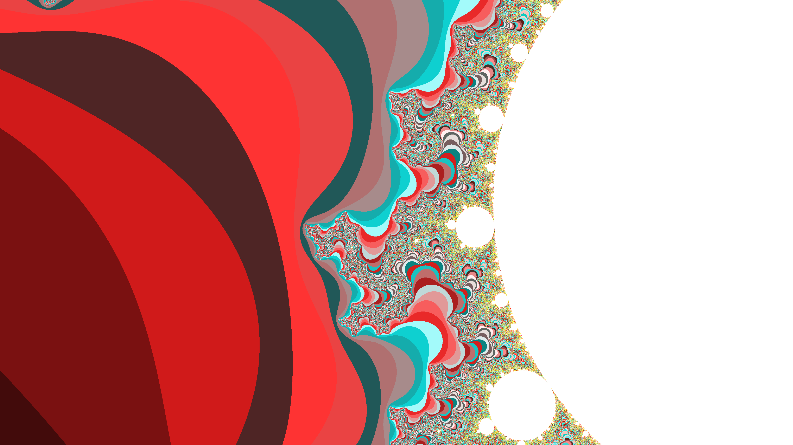
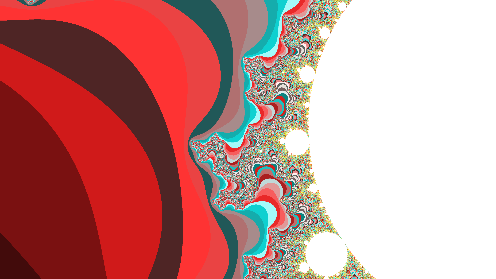

Mandelbrot
This is a multithreaded Java program that allows you to save an image of the Mandelbrot set.
The user can choose the coordinates of the set to center around, the zoom level, and the number of threads to use in the rendering process.
The code and documentation for this app is available on GitHub.
 

Fractals.tech
Fractals.tech came about during Clemson's 2022 CUHackit hackathon as a team submission. Our project won the award for best use of a .tech domain at the event. Through this site, you can make several different types of fractals, modify the variables of the equation used to create them, and download the image to your machine. The front end website is written in CSS and HTML, Python for the math and image generation, and a FastAPI written in Python to connect them together. You can find it at fractals.tech, hosted on my teammate Milo's website.
Portfolio Website
This website was written in HTML and CSS as a way to showcase and present my resume and projects, learn those two languages, and also learn how to use some services on AWS, such as Amazon S3, Route 53, Lambda, and CloudFront. The source code for this website is available on GitHub.
Conway's Game Of Life
This is a Java program from high school based on John Conway's Game of Life. The user can choose from different preset game board sizes, as well as different preset gameboard setups like boards with oscillators, still lifes, gliders, spaceships, empty grids for customization, or random boards. The user can then control the speed at which the simulaiton runs, pause running, click to change a cell's status, and step through simulation rounds. The code and documentation for this app is available on GitHub.